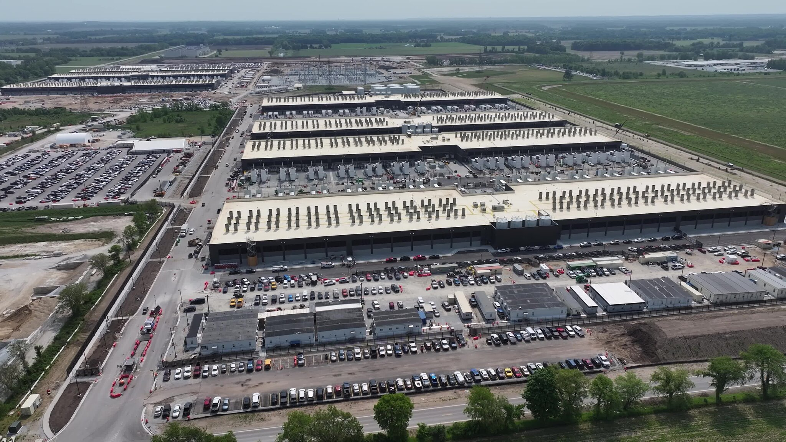

Community Impact
While data centers help power our modern technology, many local communites
experience negative effects when these large facilites are built nearby.
Data centers require large amounts of land, electricity, and water, which
can create concerns for residents living in surrounding areas.

How Communites are Affected
- Large amounts of land are cleared for construction
- Noise pollution from servers and cooling equipment
- Increased strain on local power grids
- Water resources may be redirected from communities
- Property values can be affected in nearby neighborhoods
- Local residents often have little say in developement decisions
Back to Home